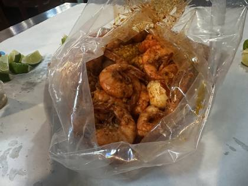
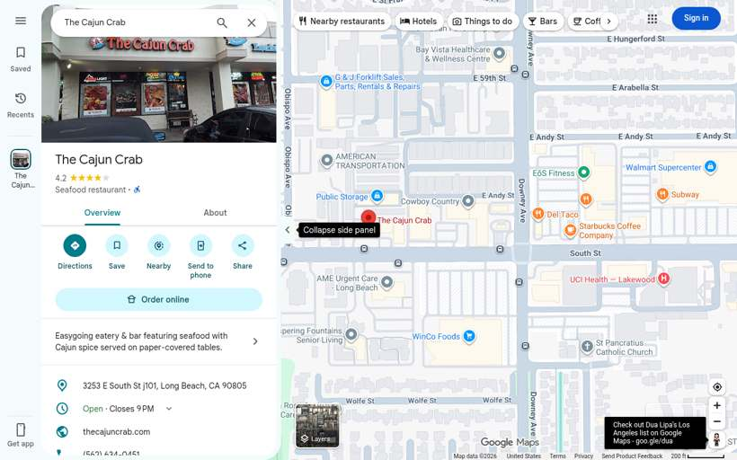
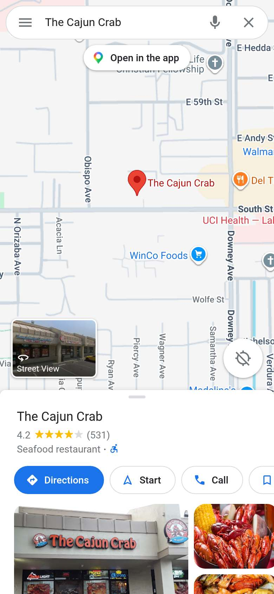
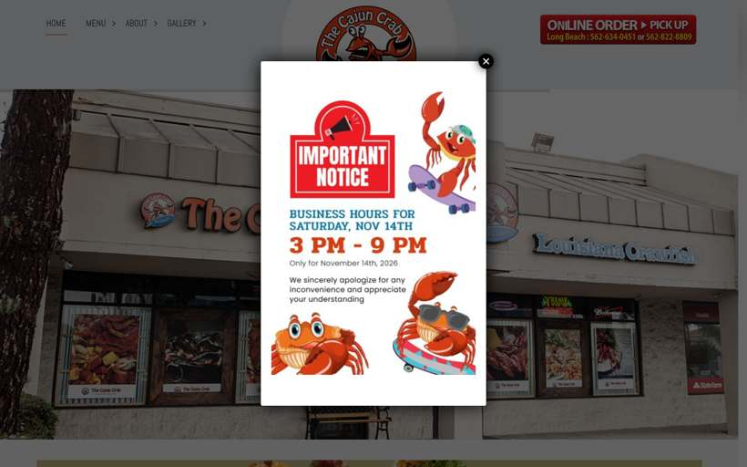
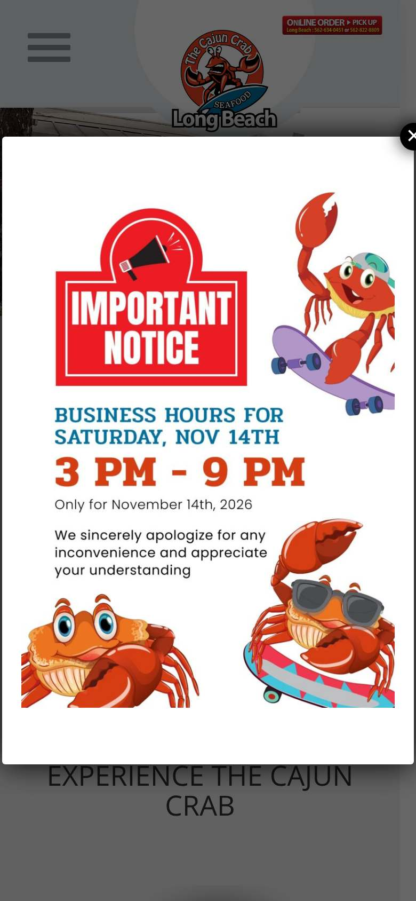
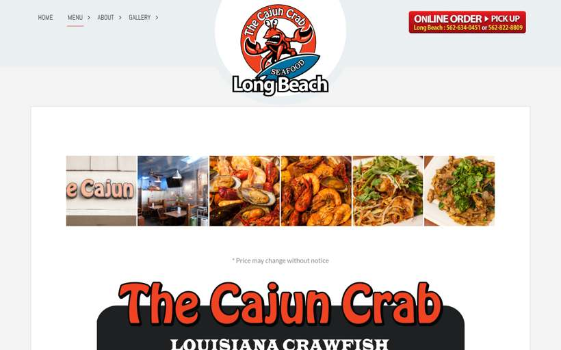
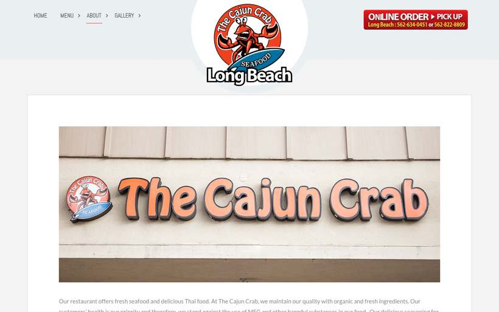

The Cajun Crab
United States · 1 photos · tap for source
🛋️ Fit-out0 photos
No fit-out photos for this venue yet.
🦞 Food1 photos · ← → / swipe / tap to enlarge

⚑ Highlightsflagged for Seb · sourced
- Where16 sites found on Google Maps (lower bound)Lakewood, California · checked Google Maps sweep 20 Oct 2026 locations ↗
- NZ/AUUnknown
- LookWhat stands out in the photosboil-in-a-bag (1) · tipped onto paper (1) Source: CLIP tags, attrs.json
- Photos0 fit-out · 1 food · 0 otherTap any photo caption for its source page.
📍 16 sites found on Google Maps (lower bound) (Google Maps sweep 20 Oct 2026)Unknown
Listing & website

Google listing · desktop
Google listing · phone
Website · home
Website · home · phone
Website · menu
Website · about📍 16 branches found on Google Maps (20 Oct 2026, lower bound)
- Cajun Crab Shack Thousand Oaks, 1074 E Avenida De Los Arboles · ★4.0 (283)
- The Cajun Crab Lakewood, 3253 E South St j101 · ★4.2 (531)
- The Cajun Crab Valinda, 2050 Valinda Ave · ★4.4 (49)
- Cajun Crab Wallingford, 950 Yale Ave · ★4.5 (154)
- Cajun Crab Company Lake Lorraine, 1193 A, Eglin Pkwy N · ★4.2 (922)
- Cajun Crab Hut Saint Augustine South, 2125 US Highway 1 South, 2125 Dixie Hwy Ste A · ★4.4 (962)
- Cajun Crab Juicy Seafood & Bar Jacksonville, 410 Commerce Center Dr · ★4.8 (5,166)
- Cajun Crab Juicy Seafood & Bar Sunshine Ranches, 11401 Pines Blvd #892 · ★4.3 (199)
- Cajun Crab Waikiki Honolulu, 226 Lewers St 2F L215 · ★4.9 (3,806)
- Cajun Crab & Pho Omaha, 346 N Saddle Creek Rd · ★4.3 (640)
- The Cajun Crab Louisiana Seafood Restaurant North Plainfield, 789 US-22 · ★4.4 (256)
- Cajun Crab Fort Worth, 913 E Berry St #113 · ★4.1 (175)
- Cajun Crabs & Shrimp #2, Round Rock Round Rock, 2601 S I-35 Frontage Rd Suite B-200 · ★3.9 (640)
- Cajun Crabs & Shrimp #3 Killeen, 1414 S Fort Hood St · ★4.1 (401)
- CAJUN CRAB PUB & GRILL Irving, Texas, 5433 N MacArthur Blvd · ★3.6 (933)
- The Cajun Crab Claremont, California, 400 Auto Center Dr · ★3.8 (133)